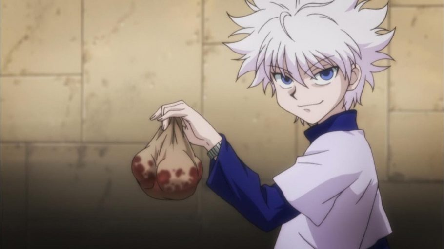

Cartao Killua
Esse e meu personagem favorito de Hunter x Hunter

Killua Zoldyck é um dos quatro protagonistas de Hunter × Hunter, um menino de 14 anos.
É o terceiro filho dos cinco da famosa família de
assassinos Zoldyck. É o melhor amigo de Gon, que conheceu durante o Exame Hunter 287.